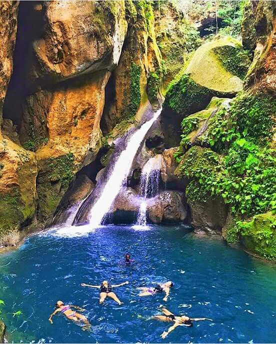
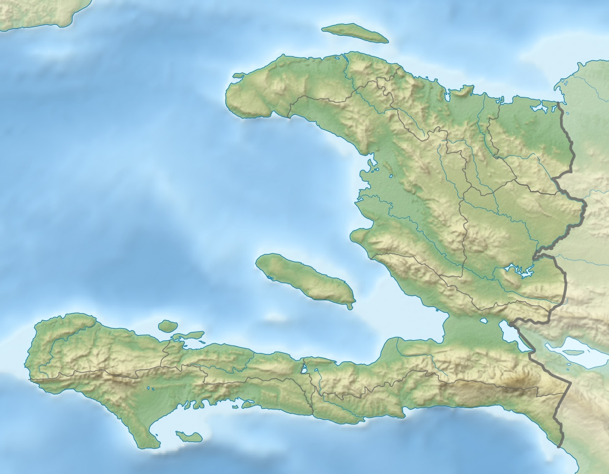
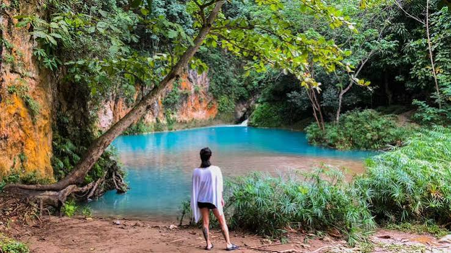
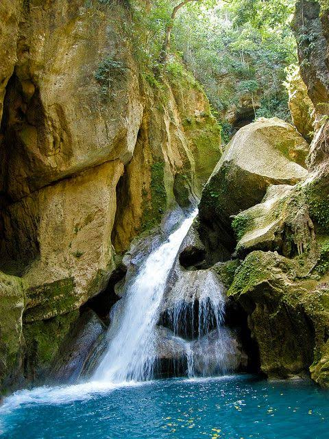
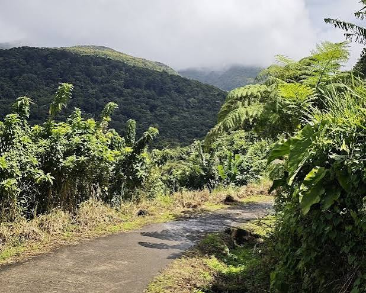

Um conjunto de cachoeiras de águas azul-turquesa cercado por mata preservada, um dos tesouros naturais mais impressionantes do Haiti.

Escondido nas montanhas a 12 km de Jacmel, Bassin Bleu é um conjunto de quatro piscinas naturais ligadas por cachoeiras, cercado por mata verde e paredões de pedra. Os nomes dos poços são Bassin Palmiste, Bassin Bleu, Bassin Clair e Bassin Cheval.
O mais famoso é o Bassin Clair, com uma queda de 10 metros desaguando numa água azul-turquesa rica em minerais.
Jacmel, Haiti
Cachoeira Natural
4x4 + trilha de 20 min
Aprox. 200 metros
Chegar lá é parte da aventura.
De Jacmel, pega-se um 4x4 até o vilarejo de Bassin-Bleu e depois uma trilha de 20 minutos montanha abaixo, com trechos que exigem corda para descer um paredão de 3,7 metros. Guias locais ajudam no caminho.
O número de visitantes por dia é limitado para preservar o local. Muitos pulam das pedras direto nas piscinas profundas.
Mais que beleza, Bassin Bleu tem significado espiritual. É considerado um oásis natural e ponto de purificação na cultura haitiana. A água azul-cobalto atrai quem busca renovação, e o silêncio da mata só é quebrado pelo som das quedas d’água. É uma experiência de tirar o fôlego e um dos tesouros naturais do país.
Localizada próxima à cidade de Milot, no norte do Haiti.




As piscinas possuem uma coloração azul intensa devido aos minerais presentes na água.
O acesso inclui uma trilha com trechos íngremes e descidas auxiliadas por cordas.
O local é considerado um ponto de purificação e renovação na cultura haitiana.